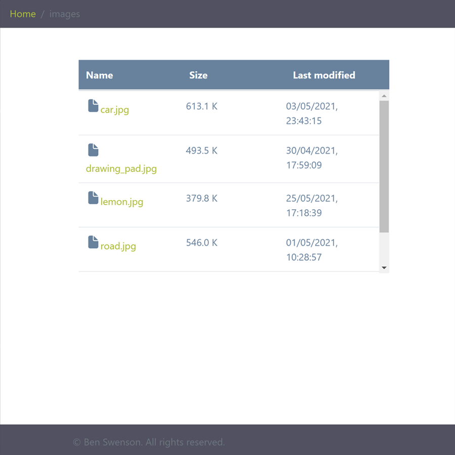
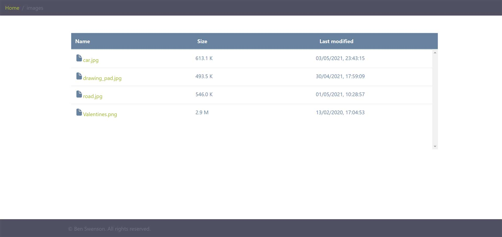

Search folders and read files
Made with pure Node.js (without any frameworks) and Bootstrap, this application demonstrates capabilities and skills with core Node.js modules 'file system', 'child process' and 'path' as well as Javascript code using ES6 techniques such as Promises.
When users land on the home page they can explore different folders and read files. The names of the folders and files in the left column include their respective sizes in the middle column and their 'last modified' status in the right column. At the top of the page the full path of the chosen folder or file is in view, relative to the home directory, in the form of a breadcrumb. Users can click on any part of the path to link to that particular folder or file. The 'name', 'size' and 'last modified' headers can be clicked to alternate the order of the columns and an icon arrow will appear to indicate either ascending or descending order.
A wide range of built-in modules were utilised, for instance 'http' to create a server and accept user requests and respond to them. The 'https' module was used to get JSON data from an external link which uses https. The 'child process' module helped run shell commands run directly from the Node code to get the size of directories. The 'path' module helped manipulate paths, for instance to print paths of files and directories in the breadcrumb at the top of the page and also to read files. The 'file system' module not only reads data on the server and passes it to the http response, but also helps create readable streams with audio/video files so chunks of data are sent to the user instead of the whole file.